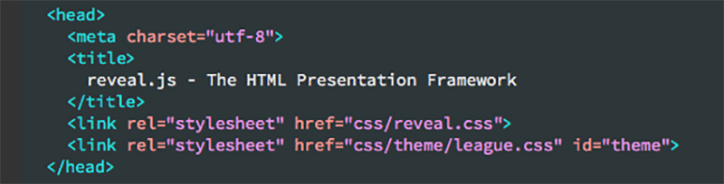
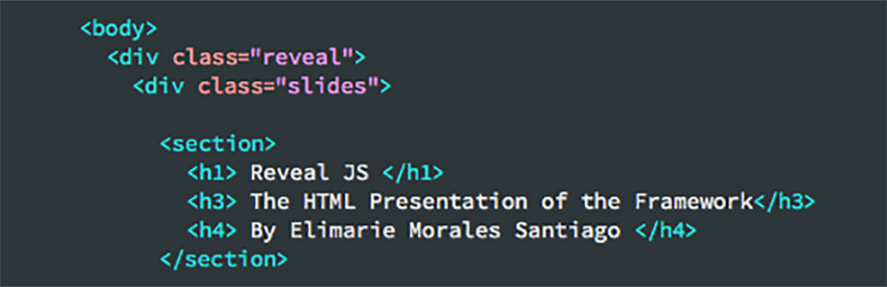
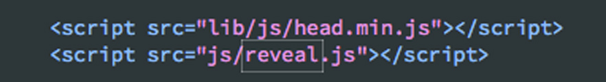

Reveal JS
The HTML Presentation of the Framework
By Elimarie Morales Santiago
The HTML code
The javascript frameworks help us to reduce development time by giving us functions and styles already pre made by someone else (the creator of the framework).
Before we start
During this presentation you can press ESC to enter the slides overview, and you can also hold down alt and then click on any element to zoom on it. Afterwards click Alt and click anywhere to zoom back out. This is possible thanks to a minimal JavaScript API zoom.js which enables zooming in on elements in a document.
In order to explain how the framework is used I will explain how this presentation was made.
The head tag
In the head tag of the html file of this presentation we have two link tags: 

- The first link let us use all the styles that already exist in the reveal plug in.
- This styles involve the size of the font, the color, the type of transitions of the slides, the space between different elements, among many other things.
The body tag
In the body tag we can see the following:
The first div (where all the slides are contained) HAS to have a reveal class. With this, everything inside the div will behave exactly as expected.
The second div have the class slides . This means every section tag inside will become a slide on the browser.
The section tags don't need a class or an id. Since they are already inside the slides and reveal divs.
Finally, at the end of the body tag, outside of the two containers, there are two scripts that make everything work:
And the end result is this very presentation.